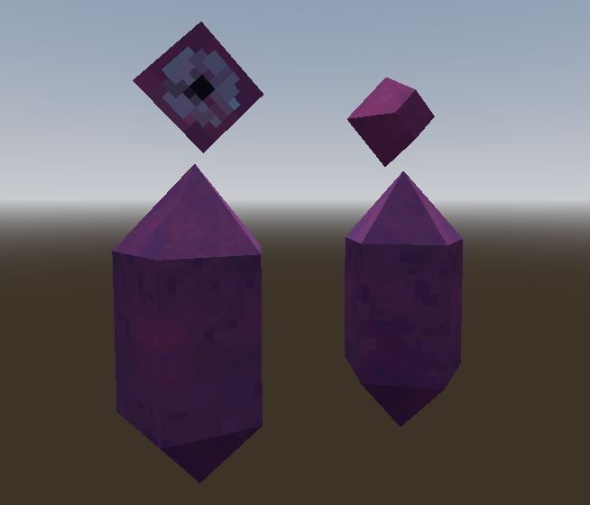

I push buttons, and I make free + open source virtual reality games
Table of Contents
- About
- Goals for this project
- How does Hellrot compare to Blasty Boy?
- Tech Breakdown
- Thoughts about the game
- Movement Controller, linear velocity acceleration
- Wall running
- Singletons my beloathed
- XRRig Abstractions
- In Summary
- Closing Thoughts
About
Hellrot: VR is the second Godot game that I've published. It was made in 7 days for the No ICE in California game jam - you'll be able to find it in the Itch.io bundle with the same name once that's up.
The game is about shooting demons with a hand-mounted blaster, made to mimic Samus Metroid. There's also a focus on Rigidbody locomotion - the player can run up/along walls, and use a grappling hook to pull themselves to distant environment.
Goals for this project
The main goals for Hellrot were to:
- Investigate a (more) complex rigidbody-based locomotion controller, using Finite State Machines (FSM) instead of one large script
- Get more comfortable with Godot VR
- Re-implement the locomotion and core gameplay that I made for my first game, Blasty Boy (2020), as a fun measure of progress since then
I'm still at the point with Godot where I know larger-scoped features will give me trouble. I'm still working through whitebox one-shots to nail down individual features, but I'm still not at the same comfort level that I am with Unity. HurricaneVR and Hexabody (see below) are dearly missed assets coming over to Godot, so part of the reason why I wanted to focus on rigidbody locomotion was to get me a little closer to being able to make something like Hexabody.
Hexabody is a Unity asset that provides a VR player controller replicating the one used in Boneworks/Bonelabs. Its main appeal is that player movement pushes a ball around the scene, upon which a the player's camera rig is mounted to. The whole rig is connected via a series of physics joints, and so the whole player rig is affected by physics forces in the world. See also: The player movement controller used in Blade & Sorcery
HurricaneVR is another Unity asset made by the same developer as Hexabody. It adds physics hands to the game, so your hand models don't clip into the world when you push your hand into walls.
The gold standard character controller for me at the moment is physics hands (Blade & Sorcery / Boneworks / HurricaneVR), and a physics-based character controller (Blade & Sorcery, Boneworks / Hexabody). Not sure if I need to put my whole ass into it and remake a locoball character controller (out of scope for my needs?), but having something with a rigidbody that I can comfortable (read: without making me/players nausious) is very desirable at the moment. The one used in Blade & Sorcery is a little more desirable of a model, because the player doesn't get pushed around by physics forces while grounded (to avoid moving the player around while swinging their weapon at an enemy). Working on Hellrot got me a little closer to this, because I got a chance to try out using FSMs in the context of Rigidbody locomotion controllers, while also working with a more complex Rigidbody controller with Godot.
In terms of physics hands, Bastiaan Oli is currently working on implementing something like this in an upcoming Godot XR Tools update, so I'm holding off on this until I can see what this looks like. Really hoping it works well, because I had some trouble trying to implement this myself in Unity a few years ago - never could get the joints feeling great. I gave it a shot a few times, implementing a working system in Tall Wall, but it came with some gross caveats that you can read about here.
How does Hellrot compare to Blasty Boy?
In a straight 1 to 1 comparison, both games have some features that the other is lacking. But, Hellrot is deffinetly a lot more polished than Blasty Boy was, and with a more complete package too.
Game Structure:
Both games feature a similar structure - there's a tutorial section, with a short combat section to play through, before sending the player to an infinite arena level. Blasty Boy had a total of 2 levels - the tutorial, and the arena. The arena was more or less slapped together on the last day or two of the jam, since I realized designing and implementing entire levels would take too long, and the game would be too short. If I was gonna subject the player to a tutorial, I wanted to make sure there was enough content for them to actually apply the learned knowledge to. In comparison, Hellrot has 3 tutorial levels (simple locomotion, wall running/climbing and the grapple hook, and a brief introduction to combat), and 2 combat arena levels.
On the note of tutorials Hellrot's is a lot more direct with its messaging. I added textboxes to guide the player to use gameplay mechanics, showing controls schemes. The textboxes have text that update, based on whether or not the player has their handedness set to left/right (eg: "Press the left joystick to move" vs "Move the right joystick to move")
Level Art:
Hellrot's level art is also a nice step above Blasty Boy's. It actually has lighting this time (Brackeys my beloved)! I used a model pack from Synty to kitbash some simple level layouts, which ended up looking great. I do think however, that Blasty Boy's level design is more interesting - the models I used for it were better suited to indoor scenes, and so I had an easier time handling verticality with that model set.
Animation:
Blasty Boy also had a better use of animation, which is something that's mostly missing from Hellrot. Blasty Boy's enemies were humanoids, which used Unity's Animation Rig Inverse Kinematics solution to aim their guns at the player's head. The enemies would also ragdoll on death, and could be grabbed with the blaster's grapple, so that the player could throw them around the scene. I don't think grabbing enemies actually did anything from a combat perspective (ie: collisions with environment wouldn't do any damage), but it looked really cool! Hellrot on the other hand doesn't use any animation components, aside from rotating the crystal enemy's heads to look at the player. This was all a conscious choice for Hellrot, because the focus was on player locomotion, rather than animation.
Locomotion:
In terms of locomotion options, they're a little different fundamentally - Blasty Boy uses Unity's CharacterController, whereas Hellrot's is based on a Rigidbody. It would be closer to compare Hellrot's locomotion to that from Tall Wall. Blasty Boy featured wall climbing and grappling, which moved the player around based on the offset to the grapple point (a simple Transform attached to some object in the environment). Hellrot's locomotion is based on a FSM, and includes comparable state for handling when the player is touching a wall - used for wall running/climbing. It also includes a second FSM for the grapple hook, which independently applies linear velocity changes to the rigidbody.
Tech Breakdown
Locomotion
Hellrot's locomotion is driven by 2 Finite State Machines: One main movement controller, and one grapple hook controller.
The movement controller has the following states:
- Grounded movement
- In-air movement
- Wall touch movement
The grounded and in-air movement states are mostly the same, and follow the usual VR locomotion pattern that I use in most of my games. The XY input vector is mapped onto the forward/right vectors of the player's movement source (ie: the camera by default, but this can be set to the left/right controller in the settings). This is then projected onto a plane with a normal of Vector3.UP, so that any roll of the player's movement source is ignored. Finally, I multiply by process_get_physics_delta_time() and the movement velocity for the state, and add it all to the Rigidbody's linear velocity.
The grapple hook controller has the following states:
- Idle
- Latched
- Pulling
The player can hold the grip button to fire a raycast from the grapple hook out to the environment. If the raycast hits some environment, the position will be locked in, and the player will enter the Latched state.
From the latched state, the player can hold the trigger button to enter the Pulling state. In the pulling state, the player's Rigidbody will have some forward linear velocity added, moving the player towards the latch point.
Worth mentioning also - Godot's rigidbodies expect changes to linear/angular velocity to be done in the _integrate_forces(state: PhysicsDirectBodyState3D) function callback, in which you apply changes to the state parameter. In the interest of making a modular system, my rigidbody sends out a signal when _integrate_forces() is called, passing along the state object. Each state of my FSMs subscribe/unsubscribe on state enter/exit, and apply changes to the rigidbody's linear velocity each physics frame in response to this signal, as opposed to in _physics_process(). More or less the same, but by taking this approach, I was able to safely modify Rigidbody forces, as the documentation suggests.
Wall Running/Climbing
I didn't have a great model for what this should look like going into the jam (I've had Mirror's Edge in my backlog at least a decade now). But, I wanted to expand on the simple system that I implemented for Tall Wall's wall jumping, and add a little more flexibility. Tall Wall's wall jumping was a simple collision check to see if you're touching a wall or floor, done by checking the dot product of normal of the collision against Vector3.UP. If you're touching a wall, pressing the jump button would add an impulse force in the direction of the wall normal. This is more or less the same for Hellrot, although I added a little extra functionality.
I added functionality to make the player grab onto the wall by killing their velocity when they touch a wall. This is formally done by entering the WallTouchMovement state. This initial approach came with a bug where the player would stutter in and out of the WallTouchMovement state when trying to leap over walls, but I got around this by only entering the WallTouchMovement state when the player's velocity is moving downwards.
Once in the WallTouchMovement state, the player experiences a constant slow downwards velocity. This is sort of like a dampened gravity, while they aclimate to the new change in state, and figure out their next move. From here, they can either:
- Jump off of the wall
- Climb up
- Run along the wall.
Climbing and wall running function more or less the same. The player's input motion is projected onto the world's XZ plane. Motion that goes in the opposite direction of the wall's normal will apply an upward velocity to the player (upwards velocity, which has been projected onto the surface of the wall, to be more specific). Lateral movement works about the same as in other states, although motion is projected onto the surface of the wall, so that the player's XZ velocity doesn't slow down if they try to move forward/backwards into the wall (in an attempt to stick against the wall while running alongside it)
I did run into an issue with this solution, where attempting to wall climb would also apply an undesired left/right motion. This is because getting a perfect forward motion against the wall is almost impossible - the player will always have a small joystick offset, which would move them along the surface of the wall. I found that in attempting to do a straight upwards climb, the player would often swing back and forth between also going left and right of the wall. The fix that I applied for this, was to add a Curve to dampen XZ movement, based on the dot product of the wall and the player's motion vector. The more that the player moves into the wall, the more any lateral movement gets dampened. Straight upwards wall climbing felt satisfying after applying the change.
As a side note, I did also implement coyote time into the wall touch system - there's about a 0.1s window where the player can be not touching a wall before they transition out of the wall touch state. This ends up being nice for nailing jumps coming out of a wall run, when there's a limited amount of space to jump off of.
Settings and Accessibility
I'm slowly building more infrastructure to handle settings and accessibility with each game. In this one, I've added setting options to control player handedness, and haptic intensity. Player settings are configurable in the settings menu, which is accessible in both the pause menu and the title menu now - the settings UI is now a prefab that I've added to both UI scenes.
At some point, I want to store settings in a Resource, so that I can have one for default settings and one for the current state. It'll make serializing to disk easier when I need that functionality, and will also make it easier to reset settings if needed. My globals singleton is getting a little too bloated for my liking!
Accessibility is something that I'm trying get a little better at with each jam - if I'm asking a player to go through the effort of putting a headset on, it would be a lot to give them nausia in return. Next up, I wanna add vignettes - something I had in Tall Wall, but have yet to implement in Godot.
Enemies: Bloater

The Bloater was the floating red bomb enemy, whose behavior is not unlike Minecraft's Creepers. It floats towards the player each frame, and if it gets within a certain range, starts to swell up before exploding after a short duration.
If a Bloater takes damage, the bloater becomes unable to stop its explosion, and starts to swell up faster - the player must keep shooting the bloater to kill it before it explodes, or risk it blowing up. The rate that the bloater speeds up its bloating upon taking damage is dependent on the distance to the damage source. That is, if a bloater takes damage from a bullet to the face, it will swell up quickly. If it takes damage from another Bloater's explosion a few units away, it will bloat up a little slower.
When a Bloater is in the process of swelling up, a looping "charging" VFX plays, indicating the range of the explosion. The bloater's mesh scale also slowly increases to indicate that something's happening.
Enemies: Red Crystal

The Red Crystal enemy is a simple remake of the crystal enemies from Shattered Skies. I threw them in quickly, just to add a ranged threat to the game. They function mostly the same as in Shattered Skies, although these ones fire bullets in a 3 round burst.
Since this game functions in a simple arena format, crystal enemies do not have a "searching" state like in Shattered Skies. In that game, the crystal enemies would scan the environment, rotating their head in a circle slowly, only firing at the player if the player enters its cone of vision. In Hellrot, the crystal enemies lock on to the player if the player enters some vision radius. More cutting of scope here, to focus on the important part (locomotion)
Thoughts about the game
I usually go into a lot of detail with these postmortems in this section just because there's always more room for ideas than time, but I'm pretty content with what I put out for this one. I'm really happy with the overal level of presentation and polish for this one - the game feels a lot more complete than some of my previous game jam games. Mainly in that it's a complete package start to finish, with a title screen, tutorial, and enough level content to let the player actually experience the gameplay features.
That said, there's a lot about this game that I think needs more time in the oven, most of which could've been flagged earlier through more playtesting. You always think you're playtesting plenty, but the best number of playtest sessions is always n+1! The main issue I'm running into, both with this game and Solar Automaton, is that I'm more focused on learning Godot as an engine and on figuring out how to implement sick systems, than actually making a game that's interesting to play! I don't think this is necessarially a bad thing today, but I do want to make sure that I keep an eye on this for future games - especially ones I do outside of jams.
Movement Controller, linear velocity acceleration
The Good: A flexible movement controller
My past movement controllers didn't really have much room for adding on new features. They were usually as simple as they needed to be - move the player around the scene, and maybe let them jump. In later jams that I used Unity for (I think everything after Tall Wall), I used either Hexabody or HurricaneVR's locomotion controllers, so it's not something I've had to think about for a while. I did do some prototyping here and there to add in grapple hook functionality to Hexabody, but nothing made it out of the prototype phase. There was just a lot of complexity, especially when I'm appending to an existing fully fleshed-out system like hexabody.
In short, this ended up being a great framework for building a movement system! I loved how much granular control I got over each state, and how easy it was to add in a new state. I think this could aleviate the complexity issues with appending to something like Hexabody, in the case where I wanted to append more complex functionality to the framework.
The Bad: Linear Velocity Clamping
The main issue I have with the movement controller is in the way that I'm applying linear velocity. I took a naive approach to applying linear velocity to my rigidbody in each state - simply adding the desired linear velocity to the rigidbody each physics frame via _integrate_forces(). This worked really well for handful of cases, although it came with the nasty side effect of making the linear velocity scale higher than intended, without stopping at any speed cap. Some sort of damping would've been great here, but I decided early on to just clamp lateral linear velocity to some upper bounds. This was the solution I used for the greater half of the jam, because it worked well! I had nice control over the player's lateral target velocity, and alsod how fast the player would accelerate to that target velocity. I was able to clamp the XZ axis independently of the Y axis, which worked great for the InAirMovement state, in that it did not overwrite the upwards/downwards momentum of the jump/fall.
This really bit me in the ass later, once I started to work with a second FSM to also independently apply linear velocity to the player's Rigidbody. The idea was that the player would be able to use the grapple hook to pull themselves to some point in the environment, acting independently of the player's usual locomotion options. They should be able to run along walls like normal, and use the GroundedMovement/InAirMovement states to add secondary motion to the grapple hook's pull motion.
Unfortunately, because of the way I clamped the linear velocity in each state, this ended up affecting other states' attempts to modify the rigidbody's linear velocity. For a quick example - the grapple hook's Pulling state would pull the player towards the grapple point, claming the linear velocity at a maximum of ~5m/s. The InAirMovement state would move the player laterally, clamping the XZ linear velocity at a maximum of ~2m/s, leaving the Y linear velocity unmodified. The end result was that the player would slowly move towards the grapple point, while also swinging an extra amount up and down, depending on if you were above or below the grapple hook's latched point. For a while I didn't actually clock this as a bug because the upwards velocity was actually really nice for throwing yourself up and above the environment that you grappled to - I only really noticed how bad it was when I kept pulling with the grapple hook, and found that I was being swung up and down rapidly, all while slowly moving laterally towards the point. Not great for nausia!
This is a new problem for me in Godot - with previous jams in Unity, I was able to apply a constant force to my Rigidbodies, so there would be a constant "x meters per second" force being applied to the rigidbody. I tried a handful of functions in Rigidbody3D and in PhysicsDirectBodyState3D, but I wasn't seeing the behaviour I was expecting. I'm sure there's some function/approach I'm missing, so this is almost certainly just a "needs more time in the oven" problem that I'll sort through in the prototyping I do between jams.
After the jam, I did put some thought into how to fix this through another approach - having each FSM state apply a correcting velocity instead of a flat velocity in the target direction. In other worlds, each FSM state would apply a velocity of current_velocity - desired_velocity, likely dampened by get_physics_process_delta_time() and some damping multiplier. This way there would be no clamping necessary - the player would naturally approach the target velocity without overshooting it. If I wanted to apply a second layer of motion (ie: the grappling hook's Pulling state), there shouldn't be any competition beween the two of them. That said, I believe there would still be some jank going on, if multiple states were correcting the initial velocity of the rigidbody each frame (I can imagine the rigidbody having its velocity mirrored doubled each frame). More thought and experiementation needed, but I suspect the proper fix would be to figure out how to apply a constant force instead.
Wall running
I'm actually really happy with the base implementation of wall running! The player has a good amount of control in terms of moving laterally against the wall, while still having the option to add a little verticality by moving the joystick against the wall.
The main issue I have with the wall running system is that I forgot to add a constant force keeping the player pressed against the wall! I thought about it a couple times during the jam, and just forgot to make a notion card for it. That would've solved a lot of issues with wall running in general, since it's pretty easy to accidentally fall off of the wall if you accidentally run in the direction of the wall normal.
On that note, I think it may also be useful to add some sort of timer to unstick the player from the wall if they hold the joystick away from the wall long enough. I think this one needs playtesting to see if it feels good - it would either be really nice to prevent players from accidentally falling off of walls, or really frustrating for any kind of fast-paced attempts at movement tech. My instinct tells me that simply adding a small constant force against the wall would be better for handling this issue.
Singletons my beloathed
I'm once again running into issues with singletons, and initializing references in _ready(). The end result of all of this is that sometimes during _ready() I have to do an await get_tree().process_frame, which feels plain nasty. Fine for a throwaway jam, but the architecture was not serving me in the long run. At one point, I was awaiting 2 frames in _ready() so that references would be populated before being able to connect to signals. I think this was in the context of a FSM state, where the reference to the FSM was being fetched in the base class _ready() function, but also I needed to wait for XRRig to assign itself in Globals?
In short, I need better architecture for this. Storing a reference to the current XRRig in Globals actually was pretty nice, with some small timing issues during initialization. I think the solution here, is to always store a reference to some XRRig (Godot XRTools has a barebones one used in the staging scene), and add an abstraction layer to dynamically fetch whatever I need (transforms and controller input are the main ones).
All in all, having a singleton for a few select things in Globals.gd is still fine and helpful for the scale that I'm in. As long as it works and ships on time, I'm not super anal about it.
XRRig Abstractions
At one point, I added support for the player to change their handedness in the settings menu. This core functionality also existed in Solar Automaton, but I used it as a gameplay mechanic for ship dodging (the ship would switch to the other hand as a dodge - functionally changing the player's handedness at runtime). In Hellrot, this became a little more complicated since the blaster and grapple hook were mounted to the player's dominant and non-dominant hand, respectively. Not a huge issue, except that input signals are sent on a per-controller basis. This quickly spun into a fun issue to solve, where I would need to unsubscribe from one controller's input signals and subscribe to the other's.
Instead, I added an abstraction layer to XRRig to add wrapper signals that emitted in response to dominant/non-dominant controller input. I also added an abstraction to get the dominant/non-dominant hand, which mapped to an XRController3D based on the player's handedness setting. I plan on expanding this system in the next jam - I want to be able to swap out the active XRRig at any time, without caring about managing signal subscriptions or fetching references to updated HMD/controller transforms. It makes sense that controller input is based in XRController3D, but I need a little extra abstraction, so that the rest of my game code doesn't have to care about what node the current rig is.
I think this system was super nice in itself, but I do think that a global keybinding remapping system would be better - although I'm pretty sure I get that for free out of SteamVR. Not sure about Meta - but I don't care to publish for Meta for Zuck reasons. This will become more and more necessary as I build more complex games, but for now, I think what I have is enough. If I did decide to go through with it, it more or less means implementing the Command Pattern.
In Summary
What went well
Really happy with the level of polish that went into this one, even if the core gameplay isn't too interesting. The locomotion system was great to work with - I'm most likely going to use it as a foundation for the next one, especially if I can sort out how best to move the rigidbody around.
I'm enjoying working with the "cannon engine" XR tools + systems, after working with HurricaneVR/Hexabody for so long - it feels like a nice fresh start again.
What didn't go well
The locomotion system doesn't feel great as a result of the linear velocity acceleration issue. I made some design compromises to account for that, which I'd love to iron out for the next one.
The other main issue as mentioned above, is that I spent most of my time focused on making cool systems, rather than making a fun game out of those systems. I'm not upset about this - it was the intention going into the jam! But, it's something I would like to get more practice in for the next one.
Next Steps
The main thing I care about fixing for the next iteration of this system is the rigidbody locomotion acceleration problem.
- More Abstraction Layers:
As mentioned in a previous section, I want to completely abstract the notion of a "current
XRRig" away from the rest of my game code. All input should come from a singleton (akin toInput), and all game code should be able to dynamically respond to changes in the XRRig (whether that's the player changing their handedness, the transform source used for locomotion direction, or the XRRig being swapped out completely). - More rigidbody locomotion systems I miss hexabody! Hoping that this one will make it easier next time I try to implement a locoball locomotion system from scratch again.
- Spline Grinding: Over the past few years I've thought on and off about adding a sick grind system, not unlike Sonic Adventure 2 Battle, or Jet Set Radio. I would define a couple 3D splines/curves at design time, and the player would move along the spline at a fixed rate. After playing the Jet Set Radio VRChat map, I'm not totally sure how I feel about it from a nausia prevention standpoint. It may be better off as a NonVR locomotion thing! Still, that's the next logical place I think of, when it comes to a state-based locomotion system.
- More playtesting! I mentioned something similar in Solar Automaton, but I want to put more focus on making a game that's worth playing, rather than just making systems. This is difficult, because I love making systems!
Closing Thoughts
This jam came at a weird time for me because I got laid off the week before it started. It ended up being a nice outlet to handle all the fun questions about identity and self-worth that come with getting laid off in the arts. Can I still really call myself a game developer? Am I still good enough at what I do to be "worthy" of that title, even when all I have now are my silly little video games?
The answer to both of these is of course "yes", but it takes some time working on your mental to interalize that, even if it's an intuitive "of course it does".
I don't think Hellrot is a game that's worth playing. I think the foundations of what I made for that game serve as a good learning experience, and for good technical foundations for the next one. That was the goal going into the jam, and I'm satisfied with the result, and the takeaways I got for next time!
On another note, Godot is rubbing off on me - I'm getting more comfortable with its quirks, and I'm finding myself enjoying it more and more! I think I'm feeling more comfortable with the idea of it being my go to engine for the forseeable future.